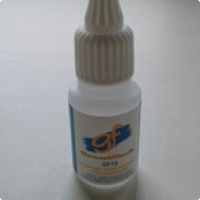
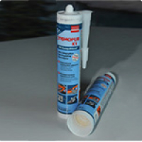
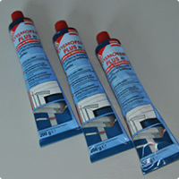
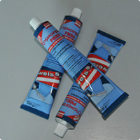
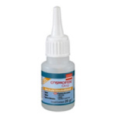
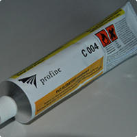

Клеи, очистители
Клеи
- GRANDFLASH GF 15 (Германия)
-

GF-15 — жидкий полупрозрачный однокомпонентный клей средней вязкости для быстрого прочного склеивания («секундный» клей).
Область применения - для склеивания жестких пластиков: поливинилхлорида (ПВХ), полистирола, поликарбоната, оргстекла (ПММА), полиэтилентерефталата (ПЭТ), полиэтилентерефталатгликоля (ПЭТ-Г), для склеивания виниловых тканей (часто применяется для изготовления карманов на рекламных баннерах), а также поверхностей из различных материалов (металлических, резиновых, стеклянных, кожаных, керамических) в любых сочетаниях. GF-15 применяется в рекламном, оконном, мебельном производстве, для склеивания различных конструкций, профильных рам, моделей.
Не рекомендуется применять GF-15 для склеивания пористых материалов и негладких поверхностей, деталей, находящихся в непосредственном длительном контакте с водой или эксплуатирующихся в условиях высокой влажности, а также в случаях, когда клеевой шов должен быть пластичным. GF-15 не подходит для склеивания полиэтилена, полипропилена и фторопласта (тефлона).
- Технические характеристики
- Основа: этил-цианакрилат.
- Клеевой шов в затвердевшем состоянии: жесткий.
- Цвет клеевого шва: бесцветный, на прозрачных основах — мутный.
- GF-15 характеризуется отличной химической устойчивостью по отношению ко многим маслам и растворителям, включая моторное масло, бензин, содержащий свинец, этанол, пропанол и фреон.
- Клей не устойчив к воздействию воды или высокой влажности воздуха
Способ применения
Склеиваемые поверхности должны быть чистыми, сухими и обезжиренными. Из-за относительно низкой вязкости клей не в состоянии заполнять щели шириной более 0.15 мм, поэтому важно обеспечить плотное прилегание склеиваемых деталей.
GF-15 нанести каплями непосредственно из наконечника флакона на одну из двух склеиваемых поверхностей, быстро соединить поверхности между собой и плотно прижать на несколько секунд (определяется визуально — материалы не разъединить по шву руками). Стараться наносить необходимое количество клея, излишнее количество приведет к увеличению времени схватывания.
Время схватывания клея и время сжатия можно точно определить только исходя из собственного опыта, так как они сильно зависят от типа склеиваемых материалов, температуры, влажности воздуха, влажности материала, толщины пленки клея и других факторов.
Оптимальная температура в рабочем помещении: +20-24°С, влажность — 40-60%. Низкая влажность и низкая температура уменьшают время отверждения (отвердевание клея происходит под действием влаги, находящейся в воздухе, так что, если влажность будет недостаточной, склеивание будет идти плохо; в этом случае рекомендуется перед началом работ разместить рядом емкость с горячей водой, дающей пар). По окончании работ флакон необходимо плотно закрыть. Клей не должен попадать снаружи на наконечник флакона иначе колпачок может к нему приклеиться.
Обработку склеенных деталей (пиление, сверление, выгибание и т.п.) рекомендуется производить не ранее, чем через 24 часа.
- COSMOPUR K1 полиуритановый клей
-

COSMOPUR K1 или второе название COSMO PU-100.110 (Германия)
COSMOPUR K1 - это универсальный 1-к ПУР конструкционный клей с вязко-эластичным швом, для применения в мастерских и в промышленности, в строительстве; заполняющий зазоры, с быстрым схватыванием. Клей COSMOPUR K1 показывает отличные результаты при склеивании различных деревянных и строительных материалов, керамики, металлов, пластиков при предварительной обработке поверхности в соответствии с нормами.
Область применения: монтажные и ремонтные склеивания, изготовление металлических окон, подокольников, лестнечные ступени, дверное производство, плинтусы, ламинат, натуральные камни, акустическая и теплоизоляция и т.д. - применять на специальных предприятиях.
Способ применения: поверхности должны быть сухими, чистыми и обезжиренными. COSMOPUR K1 наносится из картриджа змейкой на одну из соединяемых поверхностей. Клей отверждается в присутствии влаги, поэтому при склеивании невпитывающих материалов между собой необходимо орошение нанесенного клея водой (достаточно водяного «тумана»), чтобы достичь полного отверждения клеевого шва. Детали необходимо соединить в течение времени образования плёнки (при орошении водой макс. 2 мин) и при необходимости зафиксировать до достижения функциональной прочности. COSMOPUR K1 слегка пенится в процессе отверждения; выступивший клей необходимо удалить в свежем состоянии при помощи очистителя COSMOFEN 60. В отвержденном состоянии клей COSMOPUR K1 можно шлифовать и покрывать лаками и красками.
Расход клея: в зависимости от вспомогательного материала приблизительно 150 - 200 г/м2. Время образования пленки, так же как и время сдавливания поверхностей, определяется индивидуально с помощью тестов, т.к. это зависит от материалов, температуры, количества и типа применяемого клея и других критериев.
- Характеристики:
- Цвет - Бежевый
- Основа -Однокомпонентный, увлажняющий, сшитый полиуретан, без растворителя
- Время полного отверждения - 24 ч
- Температура эксплуатации - От -40°C до +110°C
- Кратковременная температурная стойкость +160°C
- Особенность затвердевшего клеевого покрытия - Вязкоэластичность
- Увлажнение - 5 мин
- Минимальная температура действия клея +10°С
Наименование Объём COSMOPUR K1 470гр. - Cosmofen Plus HV (Германия)
-

Клей Cosmofen Plus HV (Германия)
Cosmofen Plus HV – специальный клей на основе растворенного ПВХ.
Особенностью данного клея является то, что за счет растворения склеиваемых материалов (деталей пластиковых конструкций) он может сглаживать зазоры в местах соединения (до 0,3мм). При работе с данным клеем Cosmofen Plus HV также необходимо помнить, что в первую неделю склеенные поверхности не допускается подвергать солнечному облучению и воздействию повышенной температуры (свыше 25С). В противном случае в акриловом слое могут образоваться пузырьки, что проявится при работе склеенной конструкции на просвет. По истечении указанного срока клей гарантированно сохраняет прозрачность - солнечный свет на него не действует.
- Характеристика:
- Цвет: прозрачный, белый.
- Время схватывания: 2-4 мин.
- Полное время отвердения: 24 часа
Наименование Объём Cosmofen Plus HV 200гр. Cosmofen Plus weiß 200гр. - Cosmofen PMMA (Германия)
-

Клей Cosmofen PMMA или второе название COSMO SL-650.110 (Германия)
Cosmofen PMMA – растворяющий клей, используется для быстрого склеивания акрила. Клей используется в производстве рекламной продукции, при монтаже витрин для быстрого и прочного склеивания изделий из акрила. Применяется для склейки любых конструкций и деталей из акриловых стекол (что очевидно из названия состава: РММА - полиметилметакрилат, часто называемый акрилом или просто оргстеклом). Клей также с успехом может применяться в производстве оконных конструкций, автомобильной промышленности и везде, где применяют акрил.
Также может использоваться для склейки изделий из других полимеров, например, полистирола. Клеевой состав Cosmofen PMMA отличается хорошей атмосферостойкостью и исключительной устойчивостью к действию УФ-излучения.
- Характеристика:
- Цвет: прозрачный.
- Время схватывания: 2-4 мин.
- Полное время отвердения: 24 часа
- Минимальная температура применения: +7 °С
Наименование Объём Cosmofen PMMA 200гр. - Cosmofen СА 12 (Германия)
-

Клей Cosmofen СА 12 (Германия)
Cosmofen CA 12 - универсальный клей моментального действия. Это прозрачный однокомпонентный цианакрилатный клей средней вязкости для склеивания всех видов пластика, металла, резины, кожи и многих других материалов. Клей характеризуется очень быстрым и прочным склеиванием, устойчивостью к перепадам температуры и действию влаги. Не содержит растворителей.
Выдерживает температуру до 110°С.
- Характеристика:
- Цвет: прозрачный.
- Время схватывания: 4-20 сек.
- Полное время отвердения: 16 часов
- Максимальная температура применения: +80 °С
Наименование Объём Cosmofen СА 12 20гр. - C004 "PROFINE" (Германия)
-

Клей C004 "PROFINE" (Германия)
С004 - профессиональный ПВХ прозрачный клей. Для конструктивного соединения твердых ПВХ-материалов. Повышенная защита от погодных влияний. Применяется в оконном производстве, при сантехнических работах и рекламном производстве. Этот клей разработан фирмой Profine (Köеmmerling) которая уже много лет выпускает пластики ПВХ KömaTex, поэтому как не ей знать все особенности склейки пластиков ПВХ и за счет этого этот клей считается одним из лучших в склеивании ПВХ пластиков.
- Характеристики:
- Цвет: прозрачный
- Время схватывания: 2-4 мин.
- Полное время отвердения: 24 часа.
Наименование Объём С004 PROFINE 200гр.